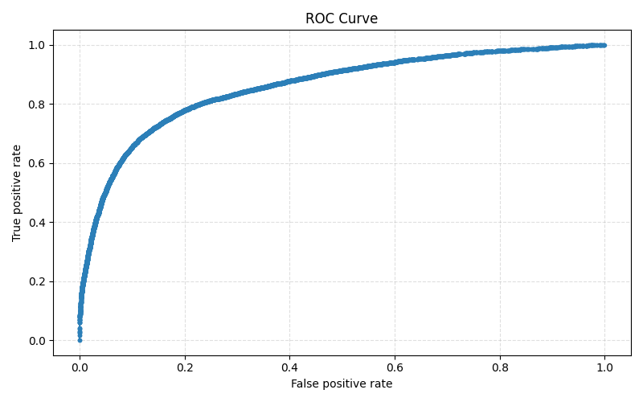
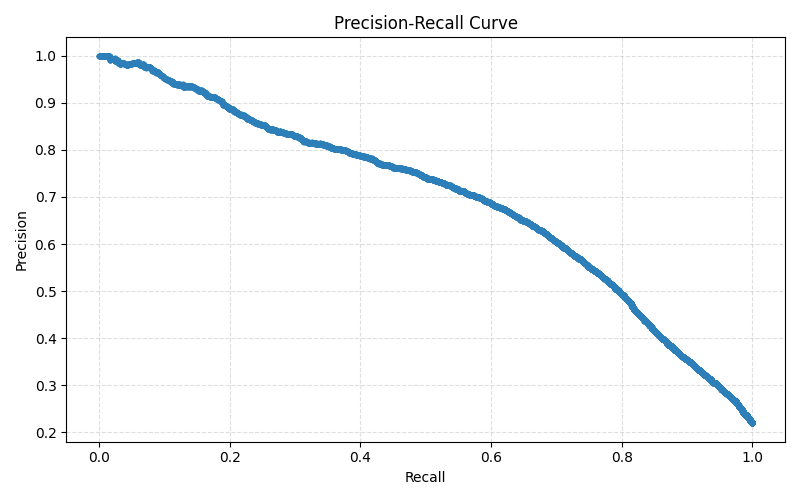
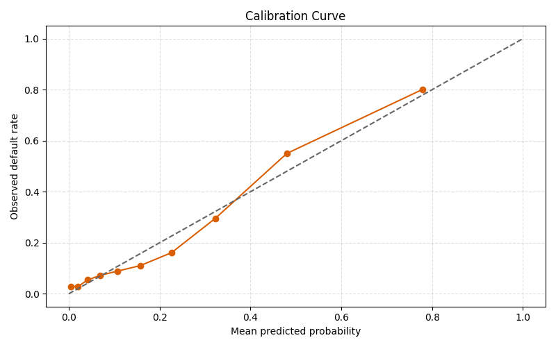
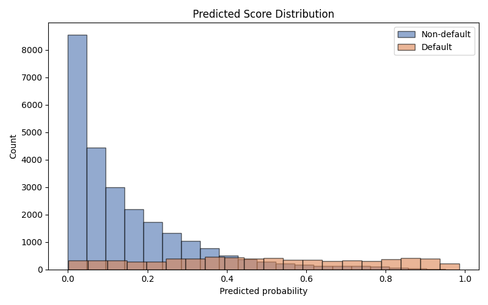

| metric | value |
|---|---|
| accuracy | 0.851575 |
| precision | 0.755775 |
| recall | 0.476797 |
| f1_score | 0.584714 |
| specificity | 0.956758 |
| roc_auc | 0.858562 |
| average_precision | 0.696251 |
| brier_score | 0.109837 |
| ks_statistic | 0.580678 |
| threshold | 0.500000 |
| optimal_ks_threshold | 0.260917 |
| Pred 0 | Pred 1 | |
|---|---|---|
| Actual 0 | 24095 | 1089 |
| Actual 1 | 3698 | 3370 |
| decile | mean_pred | actual_rate | count |
|---|---|---|---|
| 0 | 0.005209 | 0.028518 | 3226 |
| 1 | 0.020609 | 0.028837 | 3225 |
| 2 | 0.041457 | 0.054264 | 3225 |
| 3 | 0.069629 | 0.072558 | 3225 |
| 4 | 0.106750 | 0.088682 | 3225 |
| 5 | 0.157258 | 0.110388 | 3225 |
| 6 | 0.226388 | 0.161240 | 3225 |
| 7 | 0.322395 | 0.295194 | 3225 |
| 8 | 0.480208 | 0.550078 | 3225 |
| 9 | 0.779812 | 0.801612 | 3226 |
| decile | count | defaults | mean_score | default_rate |
|---|---|---|---|---|
| 0 | 3226 | 2586 | 0.779812 | 0.801612 |
| 1 | 3225 | 1774 | 0.480208 | 0.550078 |
| 2 | 3225 | 952 | 0.322395 | 0.295194 |
| 3 | 3225 | 520 | 0.226388 | 0.161240 |
| 4 | 3225 | 356 | 0.157258 | 0.110388 |
| 5 | 3225 | 286 | 0.106750 | 0.088682 |
| 6 | 3225 | 234 | 0.069629 | 0.072558 |
| 7 | 3225 | 175 | 0.041457 | 0.054264 |
| 8 | 3225 | 93 | 0.020609 | 0.028837 |
| 9 | 3226 | 92 | 0.005209 | 0.028518 |



